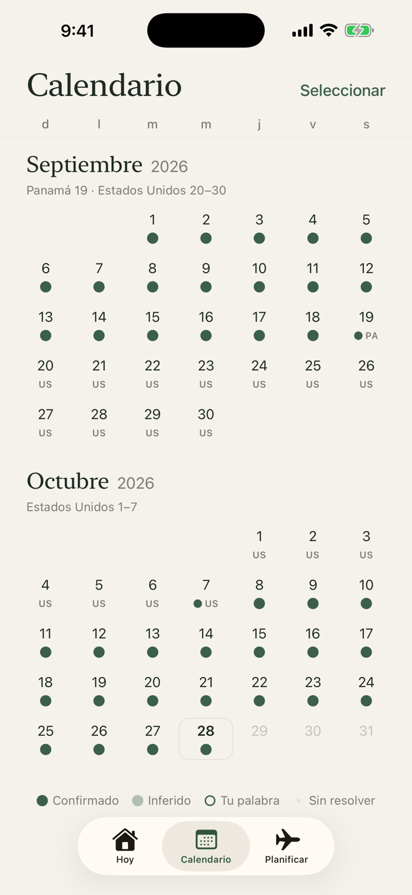
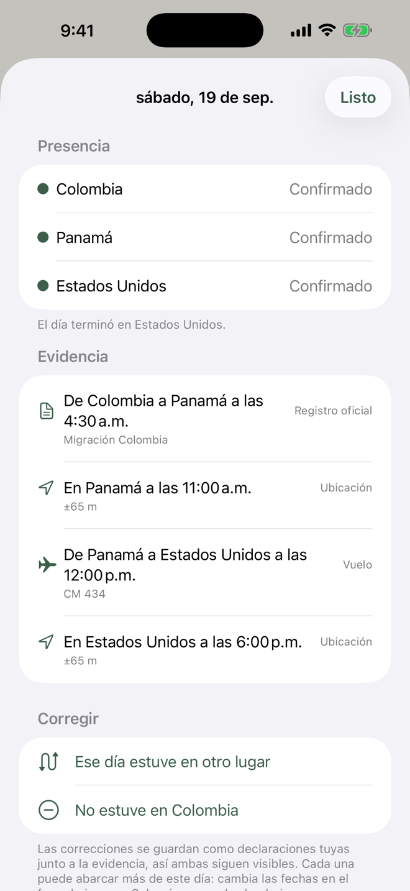
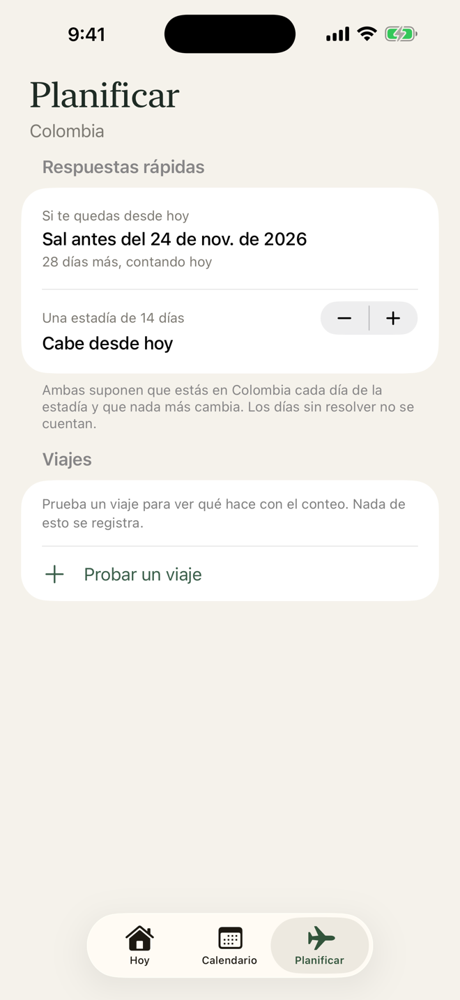
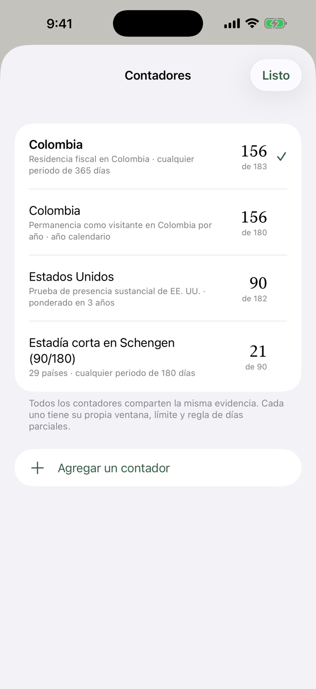

Hecho para los límites que toman a la gente por sorpresa
38 reglas incluidas, cada una enlazada a su fuente oficial: Colombia, EE. UU. y diez estados, Reino Unido, Schengen, Canadá, México, España, Portugal, Brasil, Perú, Ecuador, Panamá, Costa Rica y República Dominicana. También puedes crear la tuya.
Calculadoras gratis, sin descargar nada: Schengen 90/180 · Residencia fiscal en Colombia · Presencia sustancial en EE. UU.
Míralo en un minuto
Cómo configurarla, añadir tu pasado y leer tu número, en poco más de un minuto. Tiene sonido.
Un número, honesto sobre lo que no sabe
Cada día aparece como confirmado, inferido o tu palabra, para que veas qué tan sólido es el conteo. Los días que la app no puede ubicar quedan sin resolver, y el rango muestra hasta dónde podría llegar el número si estuviste allí.
Cada viaje en un calendario
Con acceso a la ubicación en modo Siempre, Olyvra nota cuando llegas a un país nuevo, incluso en segundo plano. Usa la señal de bajo consumo que iOS envía cuando te desplazas, no GPS continuo.

Tus viajes pasados, con prueba de cada día
No hace falta escribir años de viajes a mano. Importa tarjetas de embarque, historiales de vuelos, registros oficiales de entradas y salidas, fotos, Google Timeline, eventos del calendario y rutas de entrenamientos. Olyvra reconstruye lo que puede y te muestra lo que falta. Cada día muestra su evidencia, y puedes corregir cualquier día o rango.

Planea antes de reservar
Mira la fecha en la que tendrías que salir, prueba un viaje antes de reservarlo y recibe un aviso antes de llegar a un límite.

Todas tus reglas, lado a lado
Una regla fiscal y un límite de visa rara vez cuentan igual. Ten varios contadores sobre la misma evidencia, cada uno con su propia ventana, su límite y su forma de contar los días parciales.

Tu historial de viajes sigue siendo tuyo
Una app que sabe dónde has estado no debería tener que contárselo a nadie más.
- No necesitas una cuenta para usarla.
- Sin analítica, sin publicidad, sin rastreo.
- Tus registros se quedan en tu iPhone, con una copia cifrada en tu iCloud Drive si está activado.
- Una copia en línea opcional se cifra con un código de recuperación que solo tú tienes.
Un solo precio. Sin suscripción.
Todo es gratis durante 30 días. Después, una sola compra desbloquea la app completa para siempre: US$9.99 en EE. UU., con precios locales en otros países.
Siempre gratis
- Tu cuenta y cada día registrado
- Añadir y corregir estadías
- Importar tus registros
- Exportaciones, informes y copias de seguridad
El desbloqueo añade
- El registro automático, en segundo plano
- Abrir cualquier día para ver su evidencia
- Resolver días sin resolver con un toque
- El planificador y sus respuestas rápidas
Preguntas
¿Es asesoría legal o tributaria?
No. Olyvra cuenta días. No decide tu residencia fiscal ni tu situación migratoria, que dependen de reglas y hechos que la app no puede ver. Verifica lo importante con la autoridad o con un profesional calificado.
¿Gasta mucha batería?
No usa GPS continuo. Se apoya en la señal de ubicación de bajo consumo que iOS ya envía cuando te desplazas una distancia significativa.
¿Y si cierro la app deslizándola?
iOS deja de despertar una app que cerraste deslizándola, así que la detección se detiene hasta que la abras de nuevo. Si Olyvra pasa un tiempo sin noticias, envía una notificación para preguntar si sigues en el mismo país, así que activa las notificaciones. Si no, simplemente déjala en segundo plano.
¿Puede contar viajes de antes de instalarla?
Sí, con lo que puedes mostrar: tarjetas de embarque, registros de vuelos, registros oficiales, fotos y más. Los días que no puede ubicar quedan sin resolver hasta que los aclares.
¿Qué pasa si borro la app o cambio de teléfono?
Con iCloud Drive activado, o con la copia en línea, una nueva instalación puede recuperar tus registros. Sin ninguna de las dos, tu copia se queda en el iPhone y se borra con la app, así que guarda una copia desde Ajustes, Exportar.
¿Qué pasa si no compro después de los 30 días?
No se cobra nada: la prueba nunca pide datos de pago. El registro automático se pausa y algunas pantallas se bloquean, pero tu cuenta, cada día que registraste, añadir días a mano, las exportaciones y las copias de seguridad siguen gratis. Con las notificaciones activadas, la app te avisa tres días antes.
¿Necesito una cuenta?
No. Solo existe una cuenta para la copia en línea opcional, con Iniciar sesión con Apple, y puedes eliminarla en la app cuando quieras.
¿Está en Android?
Por ahora no. Olyvra es para iPhone.
¿Algo más? Mira Soporte.